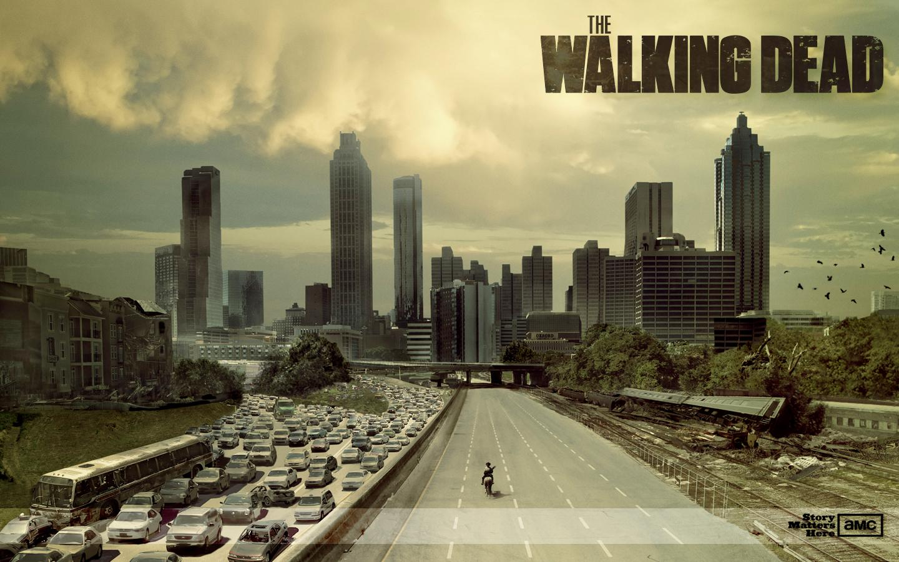
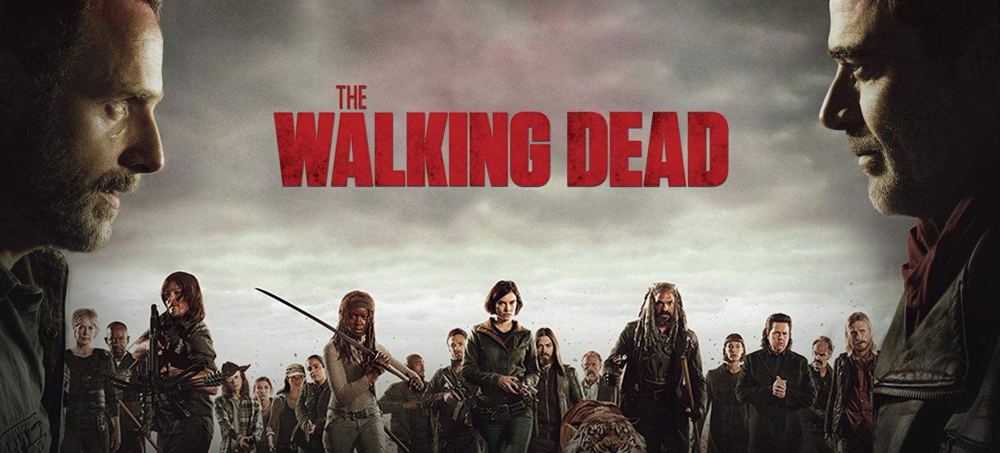
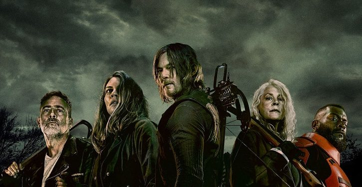
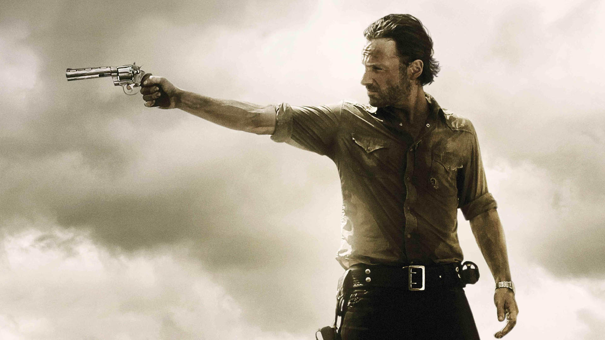
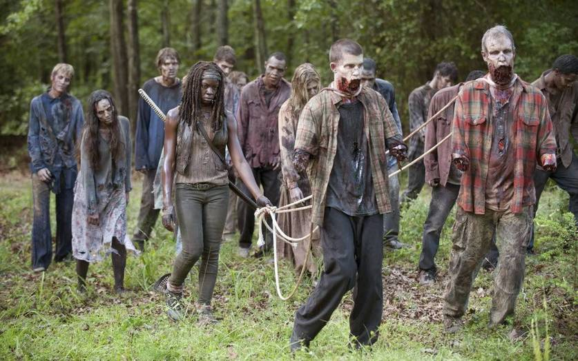
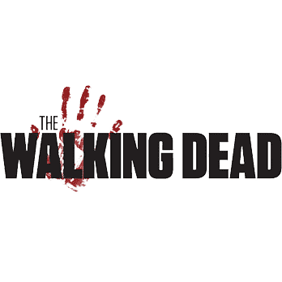

Baseado na história em quadrinhos escrita por Robert Kirkman, este drama potente e visceral retrata a vida nos Estados Unidos pós-apocalíptico. Um grupo de sobreviventes, liderado pelo policial Rick Grimes, segue viajando em busca de uma nova moradia segura e distante dos mortos-vivos.